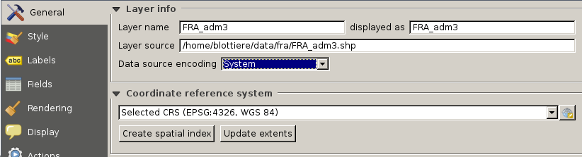

QGIS 2.14 - Utilisateur
Paul Blottiere
Juillet 2016
1
Plan de la formation
- Jour 1
- Présentation
- Installation Windows
- Les couches vecteur
- Les couches raster
- Les flux WMS
- Jour 2
- Style et étiquettes
- Requêtes attributaires et spatiales
- Mise en page cartographique et atlas
- Plugins adaptés aux besoins?
2
Présentation (1)

http://www.qgis.org/fr/site/
- Développement débuté en 2002
- Logiciel SIG libre multiplate-forme
- Quantum GIS -> version 1.9
3
Présentation (2)
De nombreux formats supportés
- Raster (GeoTIFF, JPG, PNG, ...)
- Vecteur ( Shapefile, GRASS GIS, Mapinfo, ... )
- Base de données spatiale ( Postgis, SpatiaLite, ... )

4
Présentation (3)
Dernière version
- 2.14.3 / Essen
- Sortie en 20/05/ 2016
- Bientôt la 2.16!

5
Installation Windows (1)
https://www.qgis.org/fr/site/forusers/download.html
- Deux moyens d'installer QGIS:
- Installateur indépendant
- Installateur réseau OsGeo4W

6
Installation Windows (2)
Installateur indépendant : seulement QGIS

7
Installation Windows (3)
Installateur réseau : OsGeo4W
- Pour les utilisateurs "experts"
- Permet d'installer QGIS ainsi que de nombreux logiciels annexes
- Permet d'installer plusieurs versions de QGIS en parallèle

8
Installation Windows (4)
Installateur réseau : OsGeo4W

9
Installation Windows (5)

1 - Installer Windows avec l'installateur indépendant
2 - Lancer QGIS pour vérifier le fonctionnement
10
Les couches vecteur (1)
Les bases
- Définies par des coordonnées
- 3 types de géométrie : point, ligne et polygone
- 1 seul type de géométrie par layer
- Données attributaires : données associées à la composante spatiale
- 69 formats gérés (lib OGR) : format standard QGIS est le shapefile ESRI
http://www.gdal.org/ogr_formats.html
11
Les couches vecteur (2)
Charger un shapefile

12
Les couches vecteur (3)
Propriétés

13
Les couches vecteur (4)
SCR
- Les coordonnées d'un point peuvent être exprimées :
- en degrés dans un système géodésique de référence
- en mètres suite à une projection (coordonnes 3D -> surface plane)
Système de Coordonnées de Référence : système de coordonnées + projection

14
Les couches vecteur (5)
Symbologie
- Apparence visuelle sur la carte
- Couleur, visibilité dépendante de l'échelle, positionnement, ...
- Analyse thématique ( illustration de carte )

15
Les couches vecteur (6)
Expressions
- Analyse syntaxique d'expression :
- évaluation en prédicats booléens ou comme des fonctions
- nombre, texte, référence de colonnes
- fonctions mathématiques, couleur, date/heure, ...

16
Les couches vecteur (7)
Expressions - example
case
when CODE_DEPT = 29 or CODE_DEPT = 53
then
POPULATION
else
0
end
if length ( NOM_COM ) > 15
then
'-'
end
17
Les couches vecteur (8)
1 - Télécharger les données SHP https://www.data.gouv.fr/fr/datasets/geofla-communes/
2 - Ouvrir QGIS, charger COMMUNE.shp et déterminer le SCR
3 - Ouvrir la table d'attributs pour visualiser les informations disponibles
- 3 - Changer les paramètres du style "Symbole Unique" :
- mode de remplissage "simple"
- changer la couleur de remplissage et de la bordure
- changer le style de remplissage
- changer le style de bordure
18
Les couches vecteur (9)
- 4 - Changer le style en "Catégorisé" et :
- créer une catégorie selon le code de département
- changer la palette de couleur
- classer et visualiser
- visualiser l'échelle dans l'arbre des couches
5 - Catégoriser selon la densité de population
6 - Sauvegarder le projet
19
Les couches vecteur (10)
Labels / Diagrammes
- Ajout d'étiquettes configurables en fonction de la géométrie :
- texte
- placement
- affichage
- couleur / ombre
- ...

20
Les couches vecteur (11)
1 - Ouvrir le project QGIS précédent
- 2 - Labeliser la couche COMMUNE en mode "Montrer les étiquettes pour cette couche":
- avec le code de département
- changer la police
- ajouter un cercle de couleur en fond des labels
- ajouter une ombre au label
- ajouter une règle pour ne visualiser les labels qu'à petites échelles
21
Les couches vecteur (12)
- 3 - Passer en mode "Etiquettes basées sur des règles" :
- la règle : afficher des labels seulement pour le département 29
- les labels : multi-ligne indiquant le nom de la commune et la population
- formatter les labels de telle sorte qu'on autorise un retour à la ligne sur le caractère "-" quand le nom de la commune excède un certain nombre de caractères
- 4 - Data-defined :
- ajuster la position de certain label à la main
- forcer la visibilité de certain label
22
Les couches vecteur (13)
Formulaire
- permet d'éditer les attributs d'une entité
- sélection automatique de l'entité sur la carte
- outil "Identifier les entités"
23
Les couches vecteur (14)
Actions
Un utilisateur peut ajouter des actions personalisées sur une entité!

24
Les couches vecteur (15)
1 - Ajouter un attribut "photo" à la couche COMMUNE
2 - Indiquer dans les propriétés du champs qu'on veut utiliser un outil d'édition "Photo"
3 - Utiliser l'outil "Identifier les entités" et attribuer des photos à quelques entités
4 - Ajouter une action permettant d'ouvrir la photo de l'entité grâce à la syntaxe [%"photo"%]
5 - Retourner sur la carte et visualiser les photos grâce à l'action définie
25
Les couches vecteur (16)
Opérations
- intersection, différence, union, ...
- manipulation d'entité vectorielle "Barre d'outils de la numérisation avancée" ( entités vs parties, fusion, ... )
- de très nombreux algorithmes sont disponibles dans "La boite à outils de traitements"

26
Les couches vecteur (17)
Sélection par localisation

27
Les couches vecteur (18)
Requête spatiale

28
Les couches vecteur (19)
Requête spatiale 2
29
Les couches vecteur (20)
Couche virtuelle
- résultat d'une requête mélangeant SQL et Expression
- peut utiliser plusieurs couches vecteur
- les couches filles peuvent être embarquées dans la couche virtuelle

30
Les couches vecteur (21)
Couche virtuelle
31
Les couches vecteur (22)
- 1 - Utiliser les outils suivant pour créer une couche vectorielle contenant seulement les départements frontaliers entre le Finistère et le reste de la France
- couche virtuelle
- géotraitement "Différence""
- géotraitement "Tampon"
- requête spatiale
32